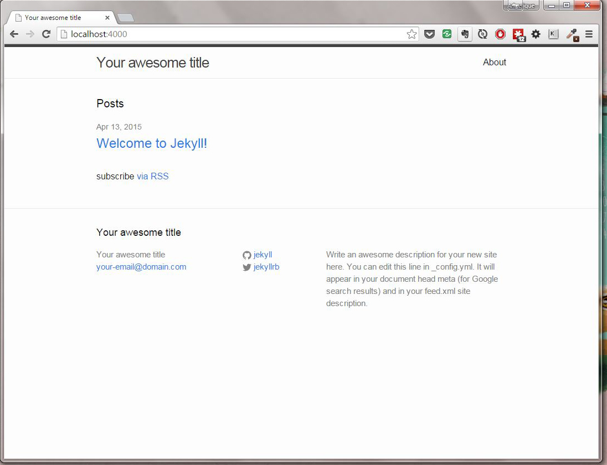

Static Site Generators
Angélique Weger
angeliqueweger.com | @messypixels
Senior Front End Developer | Detroit Trading
Chapter Leader | Baltimore Girl Develop It | @gdibaltimore
My Plan
- Static Site Generators 101
- My Priorities
- A Tale of Two Blogs: Jekyll & Middleman
- Pros & Cons of Going Static
Static Site
Flat HTML files. No dynamic content.Generators
Processes files and markup and converts them into a flat HTML web siteInput
- Ruby files for processing
- ERB files for layout, partials
and templates - Markdown, Haml, etc for content
- YAML for page/post data
- Sass, LESS for styles
→
Output
- HTML
- CSS
- JS
- media
Sweet Nostalgia
Background
To sum up…- Blog
- Sass
- Syntax highlighting for code
- A language I am familiar with
have spent at least 8 hours using
Not concerned
- Migrating data (in or out)
- Available styles and templates
FEWD ISO SSG with…
- Recent activity/development
abandonware need not apply - A large & active community
- Decent docs
Not just GH Issues - Focused on either blogging or blank-slate static sites
First Impressions

- Easier to understand
- Better docs
- Docs unclear
- Less hand holding
Middleman: Setting Up
$ gem install middleman
$ middleman init project
$ middleman server
Middleman: Blogging
In your Gemfilegem "middleman-blog"$ middleman init --template=blogMiddleman: Building
$ middleman buildMiddleman: Deploying
Thwarted!
Eventually this walkthrough sorted me out.
Jekyll: Setting Up
$ gem install jekyll
$ jekyll new project
$ jekyll serve
Jekyll: Blogging
Jekyll: Building
$ jekyll buildJekyll: Deploying
So Very Thwarted!
Should have been a warning sign when the site noted Windows wasn't officially supported.
Creating & using a Rakefile was my golden ticket.
What Worked
- Blog posts
- Adding location to post metadata
- Adding prefix directory to site
- Sass + Bourbon
- Web fonts
- Code syntax highlighting
- Modifying & creating templates
Current Impressions
- More is done out of the box —which makes the stuff that's missing more surprising:
- Tagging
- Creating new posts from the command line
- Despite expecting deploying to GH Pages to be a cinch, it was a bit complicated
Rouge may have been guilty here
- Better docs
- More reliable
— on Windows! - Error messages were more informative
- Site structure was cleaner
- Just plain enjoyed working on this site more
Links
GH Pages Site: http://angeliquejw.github.io/mm-test/
GH Pages Site: http://angeliquejw.github.io/j-test/
Static Site Generators
Pros
- Zippy
No DB queries! - Low maintenance, easy to back up
- Source control
Files AND content - More secure
- Low-cost or free hosting
- Very personalized
Use your favorite markup language, favorite text editor
Cons
- No built-in comments
- No out-of-the-box search
- Tied to your local dev
No updates from your phone - No scheduled posts
- No GUI
Be clear about who will be using, updating site - Paralyzed by choice